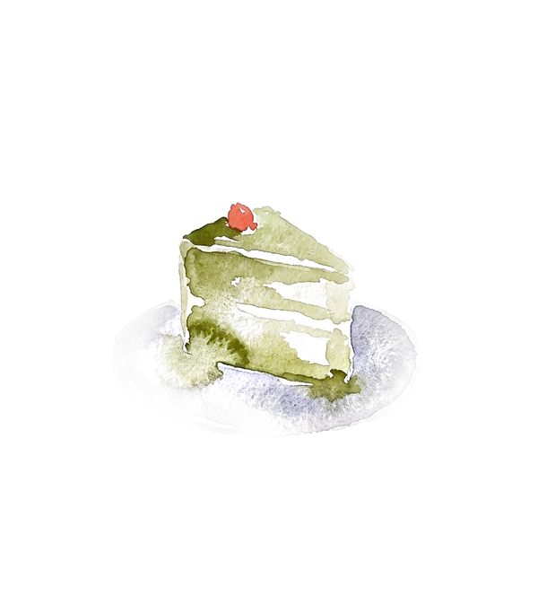
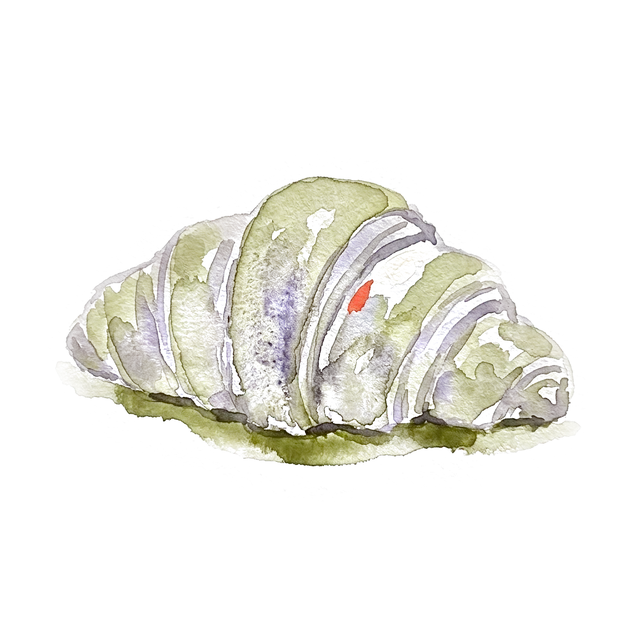
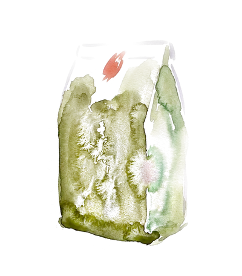
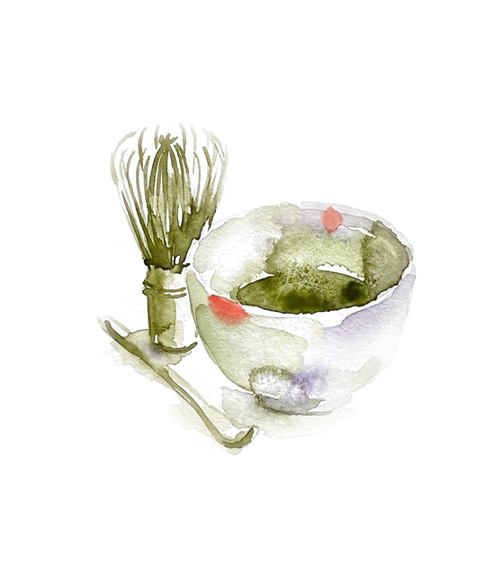
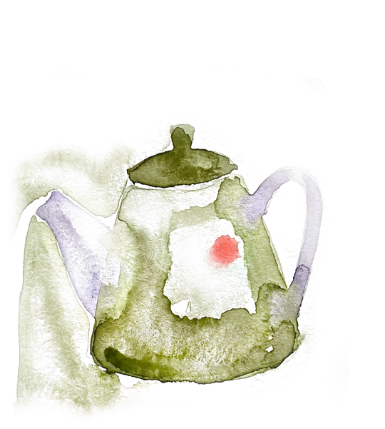

The menu
Coffee
Oat, no charge
- Filter3.20
- Espresso2.60
- Cortado3.40
- Flat white3.80
- Latte4.00
- Cold brew4.20


Desserts
Fresh from the oven
- Matcha basque cheesecake6.50
- Black sesame cookie3.60
- Cake of the day4.80
- Cardamom bun4.20
- Croissant3.60
- Hojicha custard tart5.20
Made this morning for this morning. When the cabinet is empty, that is the end of it — so come early for the full spread.

Take home
While it lasts
- Beans, 250g12.00
- Matcha, 30g18.00
- Filter papers4.00


Matcha
Built to order
- Usucha, whisked plain4.60
- Matcha latte5.00
- Ceremonial grade6.20
- Iced matcha5.00
- Iced matcha latte5.40
- Matcha tonic5.20
- Hojicha latte4.80
Say the grade, the milk and how sweet. Ceremonial is stone-ground and thinner; the everyday grade takes milk better.
Cold
From the fridge
- Iced filter4.00
- House lemonade3.80
- Yuzu soda4.20
5 Kingsway · Glen Waverley
Sun 08–14